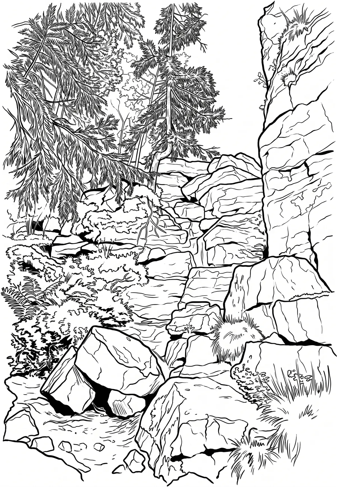

Devět skal
Vysočina kraj · 836 m n. m.

přírodní památka · #014
Devět skal (836 m) je nejvyšší vrchol geomorfologického podcelku Žďárských vrchů a druhým nejvyšším vrcholem celé geomorfologické oblasti Českomoravské vrchoviny (po Javořici). Nalézá se na katastrálním území Moravské Křižánky 3 km jihozápadně od obce Křižánky a 4,5 km jižně od města Svratka v okrese Žďár nad Sázavou v kraji Vysočina.